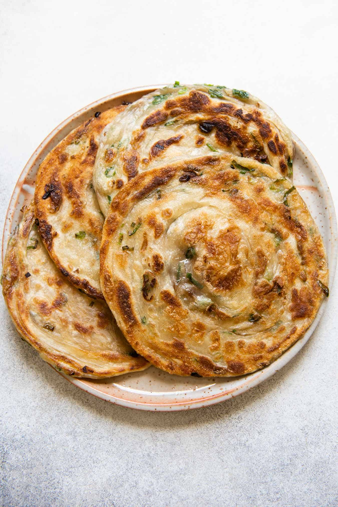

Scallion Pancake Recipe

Description
Scallion pancake or "green onion pancake" is a Chinese, savory, unleavened flatbread folded with oil and minced scallions (green onions). Unlike Western pancakes, it is made from dough instead of batter. It is pan-fried which gives it crisp edges yet also a chewy texture. A unique characteristic of scallion pancakes is the many layers that make up the interior, which help contribute to its chewy texture. Variations exist on the basic method of preparation that incorporate other flavors and fillings.
Scallion pancakes are served both as a street food item and as a restaurant dish. They are also sold commercially, either fresh or frozen in plastic packages (often in Asian supermarkets).
In Taiwanese cuisine, egg pancakes (蛋餅) are sauteed with egg coated on one side and the dough is thinner and moister.
Ingredients
- 2½ Cups all-purpose flour
- Kosher salt
- 1 Tablespoon sesame oil
- Cup chicken fat, or vegetable oil
- 2 Bunches of scallions, sliced
- 8 Tablespoons vegetable oil
Steps
- Whisk 2½ cups flour and 1 tsp. salt in a large bowl. Mix in sesame oil and 1 cup boiling water with a wooden spoon until a shaggy dough forms.
- Turn out dough onto a lightly floured surface and knead, adding flour as needed to prevent sticking, until dough is smooth, about 5 minutes. Cover; let rest at room temperature 1 hour.
- Divide dough into 8 pieces. Working with one at a time, roll out on a lightly floured work surface as thin as possible (each should be approximately 10" in diameter). Brush about 2 tsp. chicken fat on dough and top with about ¼ cup scallions; season with salt. Roll dough away from you (like a jelly roll) into a thin cylinder, then, starting at 1 end, wind roll onto itself to create a coil (like a cinnamon roll). Cover and repeat with remaining dough. Let rest at room temperature 15 minutes.
- Working with 1 coil at a time, roll out on a lightly floured surface to a 5" round (keep other coils covered). Repeat with remaining dough and stack as you go, separating with parchment or lightly greased foil brushed with vegetable oil.
- Heat 1 Tbsp. vegetable oil in a medium skillet over medium-low. Working with one at a time, cook pancake, turning frequently to prevent scallions from burning, until golden brown and crisp on both sides and cooked through, 8-10 minutes. Transfer pancakes to a wire rack and let rest about 5 minutes before cutting into wedges.